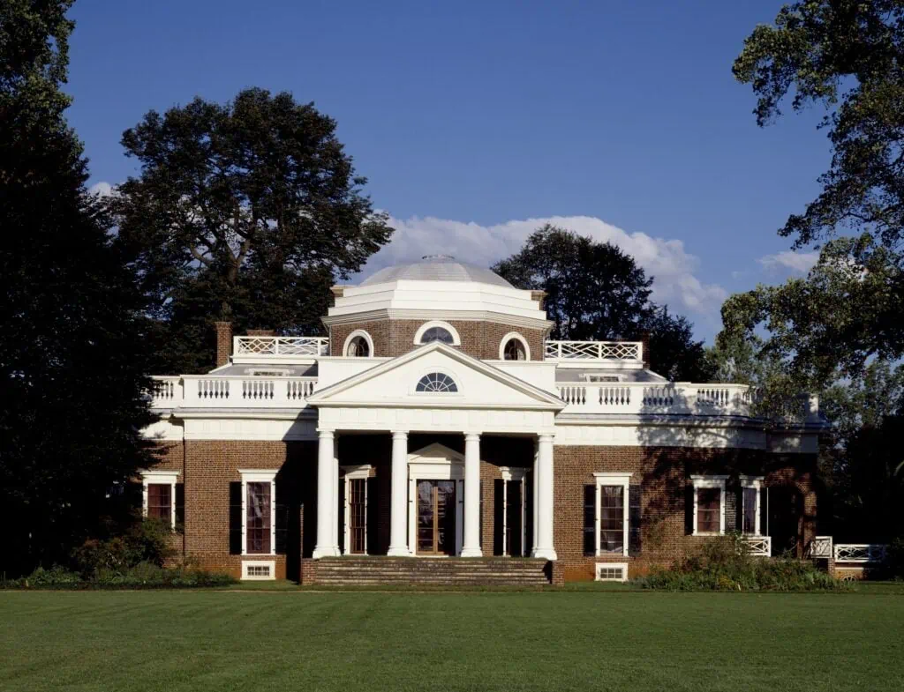

Monticello

Monticello was the classic estate of President Thomas Jefferson. Jefferson’s estate is done in a classic colonial and Greek style that is synonymous with American architecture. Monticello inspired many of the styles of building that inhabit Washington, DC, today. The home is so famous that it adorns the United States nickel coin. Thomas Jefferson oversaw 5,000 acres of plantation land from his home. Jefferson also designed the University of Virginia in a similar style. Together, the house and the university have been designated an architectural and cultural heritage site. If you can’t make it to Virginia to see the house, take a look at a nickel instead to see the architecture in miniature.
History
Monticello sits atop a lofty hill in Albemarle County, Virginia, not far from the birthplace of Thomas Jefferson, its creator and most prominent resident, who spent more than four decades designing, dismantling and reimagining the estate he called his “essay in architecture.” A UNESCO World Heritage Site since 1987, the property is considered a national treasure not only for its beauty and historical significance but also for what it reveals about the third U.S. president, a complex and controversial figure whose political philosophy fundamentally shaped the nation. As Franklin D. Roosevelt once wrote, “More than any historic home in America, Monticello speaks to me as an expression of the personality of its builder.”
Born on April 13, 1743, Thomas Jefferson grew up at Shadwell, one of the largest tobacco plantations in Virginia. At the age of 21, he inherited several thousand acres of land that encompassed the family estate as well as his favorite boyhood haunt: a nearby hilltop called Monticello (Italian for “little mountain”) where he resolved to build his own home. In 1768, a year after the future president was admitted to the Virginia bar, workers broke ground on the site, beginning a decades-long process that would captivate Jefferson, bankrupt his family and produce one of America’s most iconic and historically significant architectural masterpieces.
In those days, it was common for landowners to choose a stock design for their home from an English architectural handbook; a contractor would then oversee the project from start to finish. But this particular landowner was Thomas Jefferson, the quintessential polymath, whose passions ranged from political philosophy, archaeology and linguistics to music, botany, bird watching and pasta making. (At a dinner honoring 49 American Nobel Prize winners, John F. Kennedy famously quipped, “I think that this is the most extraordinary collection of talent, of human knowledge, that has ever been gathered together at the White House, with the possible exception of when Thomas Jefferson dined alone.”) Remembered for drafting the Declaration of Independence, Jefferson also drafted the blueprints for Monticello’s neoclassical mansion, outbuildings, gardens and grounds. Though he had no formal training, he had read extensively about architecture, particularly that of ancient Rome and the Italian Renaissance. Years later, he would become an accomplished architect whose designs included the Virginia state capitol and the main buildings at the University of Virginia.